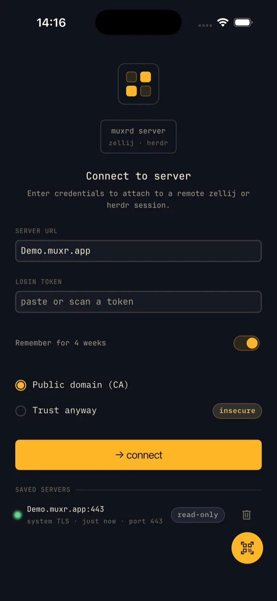
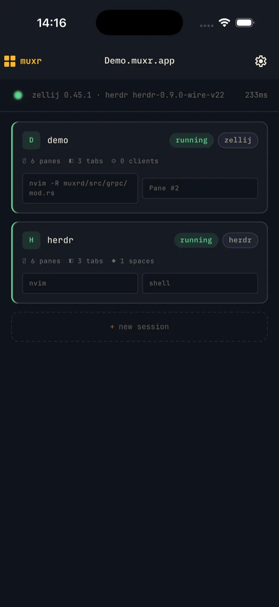
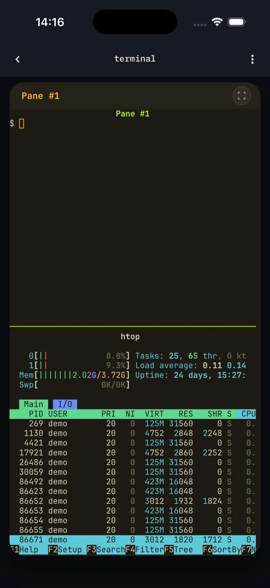
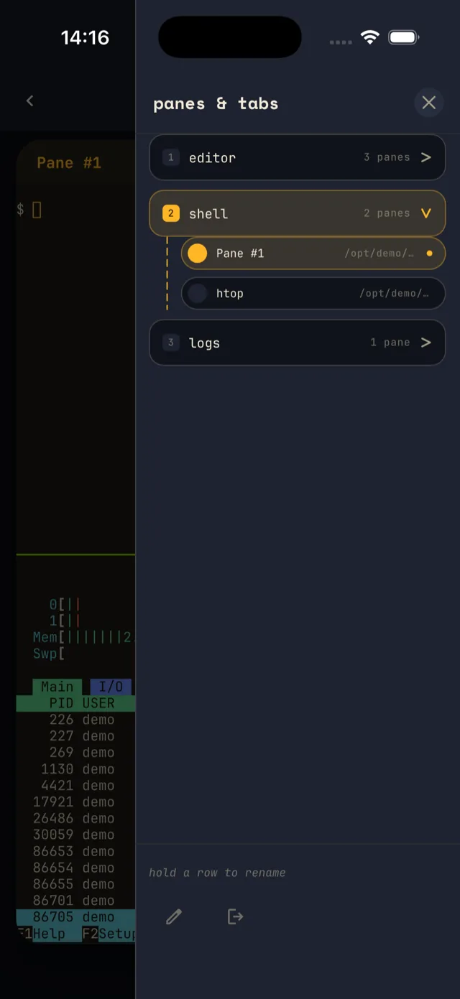
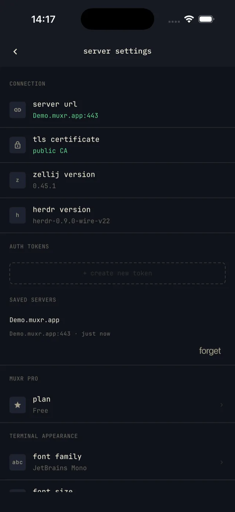

The four screens
- Connect — authenticate with credentials or a QR code.
- Sessions — list, create, rename, and kill sessions. On a herdr backend this is the single herdr session, whose workspaces appear as switchable spaces in the Terminal screen.
- Terminal — the live terminal with tab bar, pane strip, and command center.
- Settings — manage tokens, saved servers, appearance, and preferences.
Connecting
- Manual — type the server URL and paste a bearer token.
- QR scan — tap the FAB and scan a code generated by
muxrctl. - Saved-server pill — tap a pill to pre-fill its credentials; a biometric prompt unlocks a protected token.
Follow the steps in pairing. Remember for 4 weeks keeps the saved login for four weeks.

Sessions
- Tap a session card — opens it in the Terminal screen.
- Long-press a session card — rename or kill it; killing asks for confirmation.
- New session — tap the dashed “+ new session” button (the create button on tablet) and enter a name.

Terminal gestures
| Gesture | Target | Effect |
|---|---|---|
| Tap | An unfocused pane | Focus that pane (sends a FocusPane RPC) |
| Tap | The focused pane | Opens the soft keyboard for input |
| Double-tap | Any pane | Toggles server-side pane fullscreen (TogglePaneFullscreen RPC) |
| Long-press | Terminal text | Starts text selection — see Copy text below |
| Back gesture | — | Exits client-side immersive mode first; if not immersive, prompts to detach from the session |
Copy text
Long-press text to select the word under your finger, then drag to extend the selection word by word. A magnifier loupe floats above your finger while selecting. Release to show a floating Copy chip; tap it to copy to the system clipboard, or tap elsewhere to dismiss.
Selection reads the rendered terminal buffer on the client, so it works on every backend.

The command center
Manage tabs and panes here. On phone, tap the FAB in the lower corner to open a bottom sheet. On tablet, a persistent 220 px left pane rail is always visible.
- Tab pills — tap to switch tabs (
GoToTabRPC). - + tab — adds a tab.
- Pane rows — tap to focus a pane.
- New pane card — tap for a tiled pane; long-press for a floating pane.
- Long-press a tab or pane row — rename or close it.

Keyboard bar
| Key | Sequence sent | Notes |
|---|---|---|
| Ctrl | — | One-shot latch: applies to the next key — bar or soft keyboard — then clears |
| Alt | — | One-shot latch: applies to the next key — bar or soft keyboard — then clears |
| Esc | \x1b | Escape character |
| Tab | \t | Horizontal tab |
| ↑ | \x1b[A | Cursor up |
| ↓ | \x1b[B | Cursor down |
| → | \x1b[C | Cursor right (forward) |
| ← | \x1b[D | Cursor left (back) |
| PgUp | \x1b[5~ | Page up |
| PgDn | \x1b[6~ | Page down |
| Del | \x1b[3~ | Forward delete |
Fullscreen vs immersive
Server-side pane fullscreen
The zellij RPC TogglePaneFullscreen expands one tiled pane to fill its tab on the server, so other connected clients see it too. Double-tap a pane to trigger it. See Read-only mode.
Client-side immersive mode
Hides the OS navigation bar and the app's chrome on the client only. The back gesture exits it before any detach prompt.
Tablet differences
Tablet layout starts at the 840 dp breakpoint:
- The pane rail replaces the phone's FAB and bottom sheet, and collapses to a 56 px icon mini-rail in immersive mode.
- Connect uses two columns.
- Sessions and Settings use master-detail layouts.
Settings
- Connection info — server endpoint, TLS trust label, and server/backend versions.
- Tokens — create and revoke auth tokens on the server.
- Saved servers — manage saved profiles and their biometric-protected credentials.
- Muxr Pro — shows your plan (Free or Pro) and opens the upgrade.
- Appearance — font family (downloadable from the server's font catalog), font size, cursor style, and the mac-option-as-meta toggle for Option key behavior on iOS/macOS.
- Bell notification — toggle terminal bell notifications.
- In-app log viewer — read the talker log stream for diagnostics.
- Disconnect — detach and return to the Connect screen.

Read-only mode
With a read-only token, the keyboard bar is disabled and nothing is sent to the server. All create, rename, close, and server-side pane fullscreen affordances are hidden. Client-side immersive mode and text selection and copy remain available.